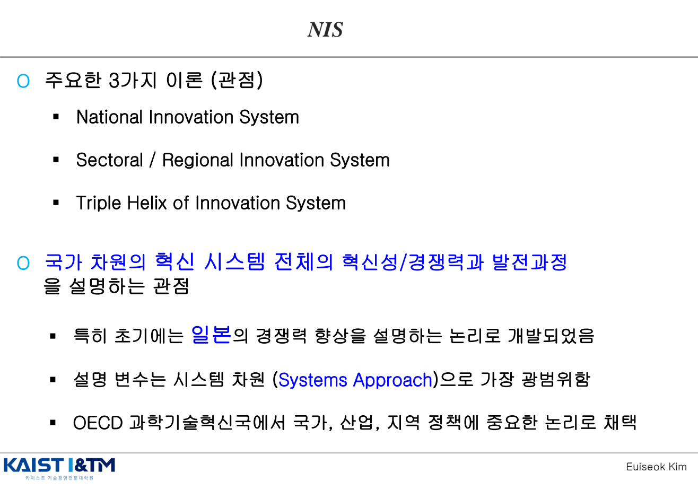
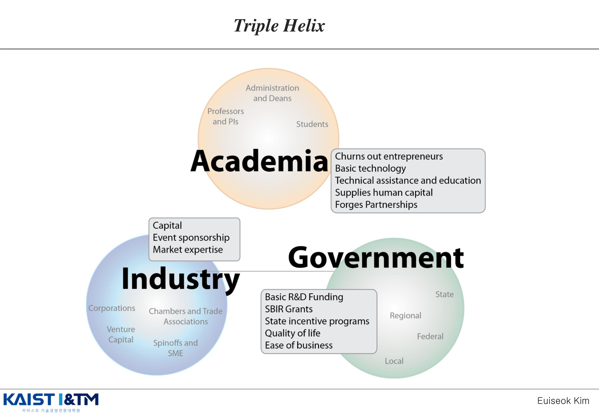
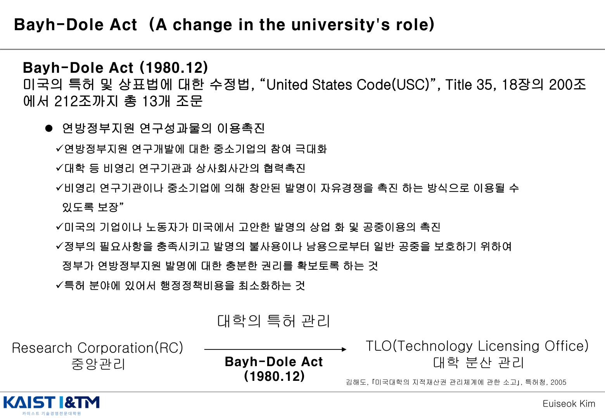
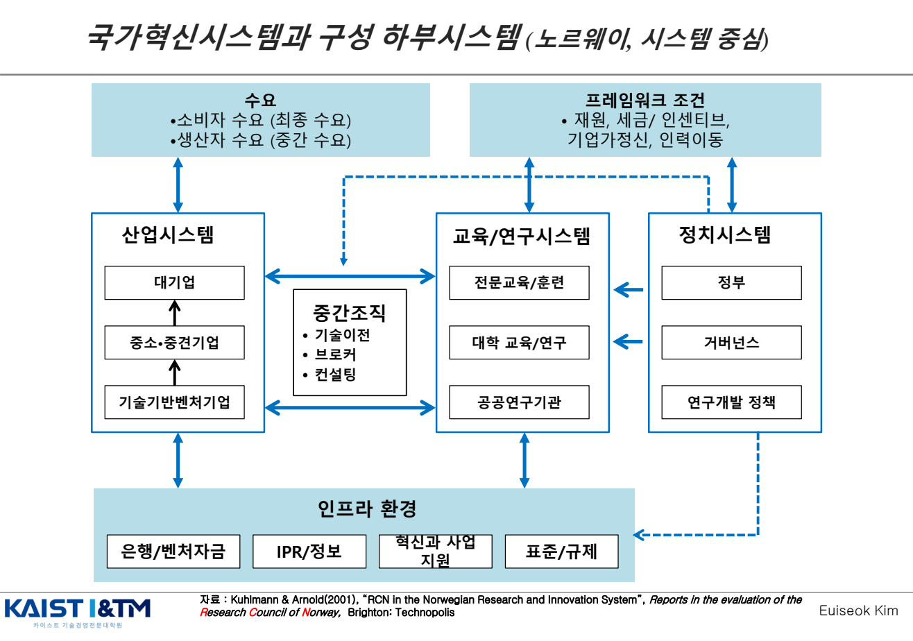
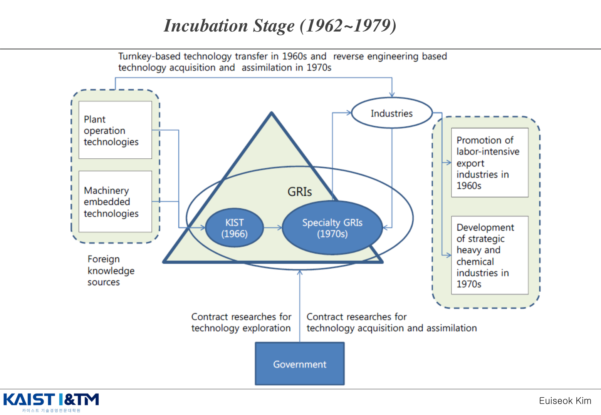
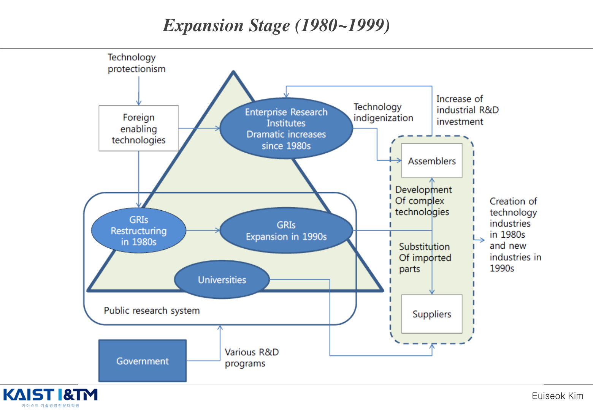
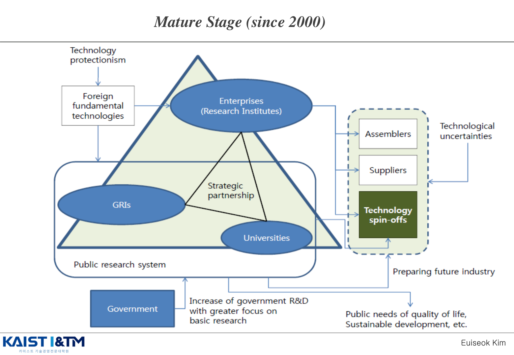
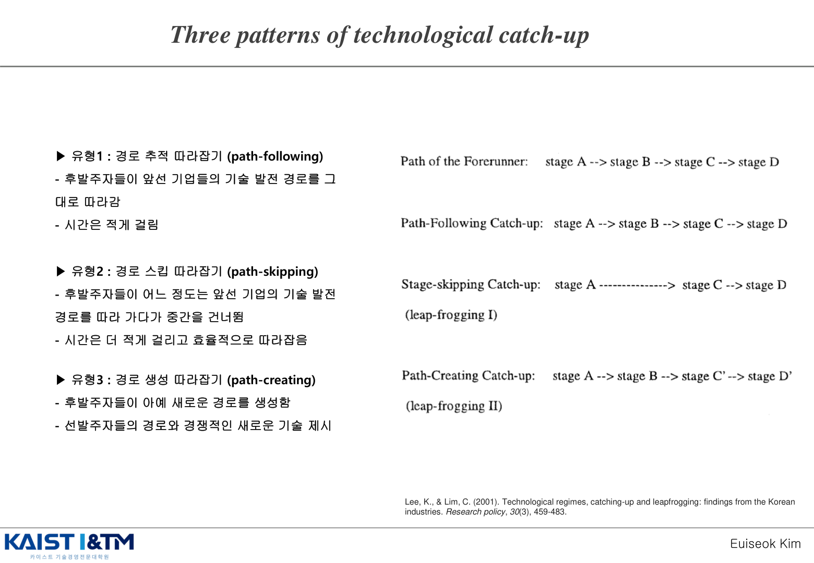
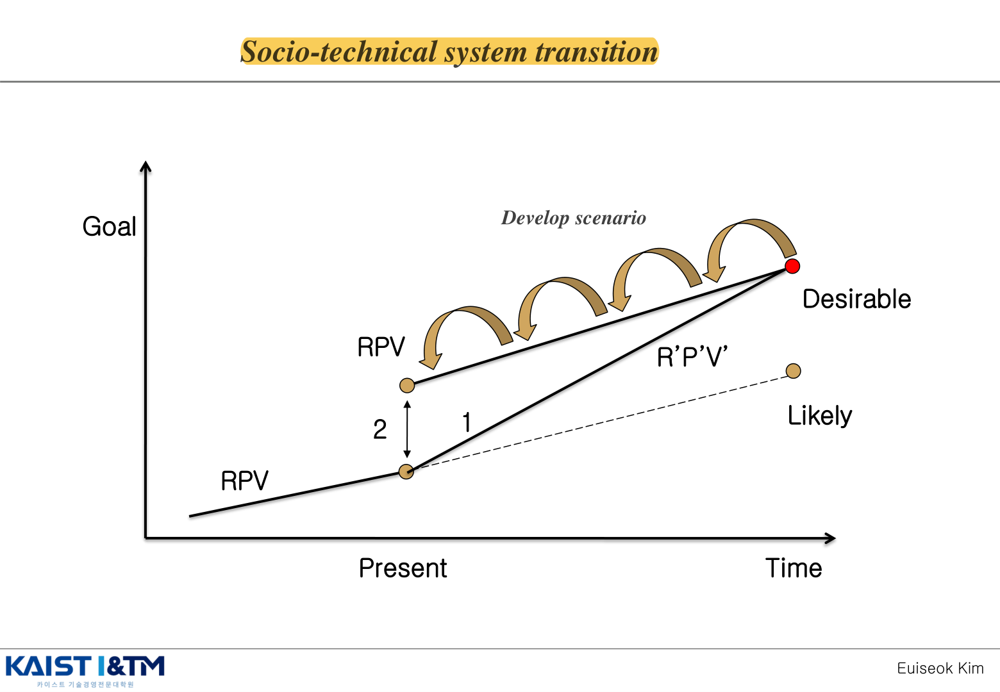
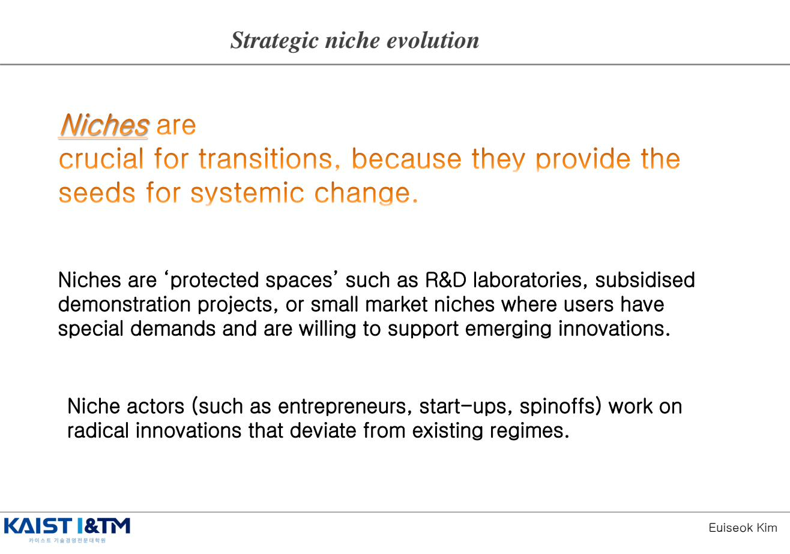

National Innovation System · 국가혁신시스템
이전 챕터들이 기업 수준의 혁신을 다뤘다면, 이번 챕터는 한 단계 더 줌아웃해서 국가 차원의 혁신 시스템을 본다. 한 국가의 혁신 능력은 개별 기업이 아니라 대학·산업·정부·연구소·인프라·제도의 상호작용으로 결정된다. Lundvall이 정립한 NIS(National Innovation System)가 핵심 개념이고, 여기에 Triple Helix(Etzkowitz)와 Geels의 사회기술 전환이론을 함께 본다.
학습 개요
- 시장 실패(Market Failure)와 혁신 영역에서 정부 개입의 필요성
- NIS의 정의와 3가지 관점 (NIS / Sectoral·Regional IS / Triple Helix)
- Triple Helix: 대학·산업·정부의 3자 상호작용
- NIS 구성 하부시스템: 수요 / 산업 / 교육·연구 / 정치 / 인프라 / 중간조직 / 프레임워크
- 한국 NIS의 3단계 발전: Incubation → Expansion → Mature
- 기술 추격의 3패턴 (Lee & Lim, 2001): 경로 따라잡기 / 경로 스킵 / 경로 창출
- Geels의 사회기술 전환이론과 Strategic Niche Evolution
1. 시장 실패와 정부의 혁신 정책
왜 혁신에 정부가 개입하는가? 출발점은 신고전경제학의 시장 실패(Market Failure) 개념이다. 완전경쟁시장 가정에서는 정부 개입이 불필요하지만, 혁신은 여러 가지 이유로 완전경쟁 가정이 깨진다.
혁신 영역의 주요 시장 실패 요인
- 외부성(Externality): 혁신의 사회적 편익이 개별 기업이 가져가는 편익보다 큼 (Knowledge Spillover) → 사회적 최적 수준보다 R&D 과소 투자
- 공공재(Public Good) 성격: 기초과학 지식은 비배제·비경합 → 시장 메커니즘만으로는 충분한 투자 안 됨
- 불완전 정보(Asymmetric Information): R&D 성과의 불확실성 → 자본시장 실패
- 전유 어려움(Weak Appropriability): 혁신 성과 보호가 어려움 → 투자 동기 감소
정부 개입의 정당성
위 4가지 시장 실패 요인 → Public Policy = Government intervention in the marketplace. 기초연구 보조, 특허 제도, 세제 혜택, 공공 R&D 등은 모두 이 시장 실패를 보정하기 위한 도구다.
2. NIS의 정의와 3가지 관점
National Innovation System(NIS)이란 국가 차원에서 새로운 지식의 생산·확산·활용에 영향을 주는 모든 행위자와 그 상호작용의 네트워크다. 단순히 R&D 기관의 모음이 아니라, 제도·정책·인프라까지 포함한 시스템적 관점이다.
출발 배경: 1980~90년대 일본의 경쟁력 향상을 설명하는 논리로 개발되었다. 같은 기술이라도 국가별로 혁신 성과가 다른 이유를 시스템 차원에서 설명하기 위함.
혁신 시스템의 3가지 주요 관점

- National Innovation System (NIS): 국가 차원의 전체 시스템 — Freeman, Lundvall, Nelson 계열
- Sectoral / Regional Innovation System: 특정 산업 또는 지역에 집중한 시스템 — Malerba, Cooke 계열
- Triple Helix of Innovation System: 대학·산업·정부 3자의 상호작용에 집중 — Etzkowitz & Leydesdorff
설명 변수는 시스템 차원(Systems Approach)으로 가장 광범위하며, OECD 과학기술혁신국에서 국가·산업·지역 정책의 중요한 논리로 채택했다.
3. Triple Helix — 대학·산업·정부 EXAM
Henry Etzkowitz와 Loet Leydesdorff가 1990년대 후반에 정립한 모델. 혁신은 대학(University)·산업(Industry)·정부(Government)의 3자 상호작용에서 비롯되며, 세 영역의 경계가 점차 흐려진다고 본다.

3 Player의 역할
| 주체 | 역할 |
|---|---|
| Universities (대학) |
|
| Governments (정부) |
|
| Business (산업) |
|
3자 간의 축 (Axes)
- Government-University Axis: 지식은 공공재(non-rival) → 정부가 대학의 기초연구를 재정 지원
- University-Business Axis: 공동 연구, 라이선싱, 산학 협력 프로그램, 졸업생 채용
- Government-Business Axis: R&D 세제 혜택, 정부 조달, 산업 정책
Bayh-Dole Act (1980) — 대학의 역할 변화
미국 Bayh-Dole Act(U.S. Public Law 96-517, 1980)는 대학이 정부 자금으로 수행한 연구의 발명에 대해 특허권을 보유할 수 있게 허용했다. 이로 인해 대학의 역할이 단순한 지식 생산자에서 지식 상업화의 능동적 주체로 변했고, 이후 미국 산학협력 모델의 기반이 되었다.

4. NIS의 구성 하부시스템 — 노르웨이 모델 EXAM
Kuhlmann & Arnold(2001)가 노르웨이 연구·혁신 시스템을 평가하면서 정립한 NIS의 일반 모델. 시험에서 NIS 구조를 그림이나 표로 그리라는 문제가 나오면 이 도식을 인출하면 된다.

NIS 7가지 구성 요소
| 구성 요소 | 세부 항목 |
|---|---|
| ① 수요 (Demand) | 소비자 수요 (최종 수요), 생산자 수요 (중간 수요) |
| ② 프레임워크 조건 | 재원, 세금/인센티브, 기업가정신, 인력이동 |
| ③ 산업 시스템 | 대기업, 중소·중견기업, 기술기반 벤처기업 |
| ④ 교육/연구 시스템 | 전문교육/훈련, 대학 교육/연구, 공공연구기관 |
| ⑤ 정치 시스템 | 정부, 거버넌스, 연구개발 정책 |
| ⑥ 중간 조직 | 기술이전 / 브로커 / 컨설팅 — 시스템 간 다리 역할 |
| ⑦ 인프라 환경 | 은행/벤처자금, IPR/정보, 혁신과 사업 지원, 표준/규제 |
핵심 메시지
NIS는 "누가 무엇을 하는지"의 개별 행위자보다 "이들이 어떻게 서로 연결되는가"를 강조한다. 중간 조직(intermediary)이 별도의 박스로 강조되는 이유는, 산업과 교육·연구 시스템을 잇는 다리 없이는 시스템이 작동하지 않기 때문이다.
5. 한국 NIS의 3단계 발전
한국의 국가혁신시스템은 시기별로 명확한 발전 단계를 거쳤다. 시험에서는 각 단계의 주요 정책과 특징을 설명할 수 있어야 한다.



| 단계 | 시기 | 특징 |
|---|---|---|
| Incubation Stage | 1962~1979 | 경제개발 5개년 계획 시작, KIST(1966) 등 정부출연연구소 설립, 외국 기술 도입에 의존, 모방·소화 단계 |
| Expansion Stage | 1980~1999 | 민간 R&D 급성장, 대기업 자체 연구소 설립 붐, 정부 출연(연) 확대, 개량·자체 개발 단계 |
| Mature Stage | 2000~ 현재 | OECD 가입, R&D/GDP 비중 세계 상위, 일부 산업에서 세계 선도 단계로 진입(반도체, 디스플레이, 모바일 등). 다만 기초연구·SW·바이오 등에서 갭 존재 |
6. 기술 추격의 3가지 패턴 (Lee & Lim, 2001)
이근(Lee Keun)과 임채성(Lim Chai-sung) 교수가 한국 사례를 분석해 정립한 모델. "Technological regimes, catching-up and leapfrogging"(Research Policy, 2001). 후발국이 선진국을 어떻게 추격하는지 설명한다.

| 유형 | 특징 | 대표 산업 |
|---|---|---|
| ① 경로 추적 따라잡기 (Path-following) | 선진국이 거친 기술 발전 경로를 그대로 따라가며 격차를 좁힘 | 가전, PC, Machine Tools |
| ② 경로 스킵 (Path-skipping) | 선진국의 일부 발전 단계를 건너뛰고 추격 | 철강(고로 단계 일부 스킵), D-RAM, Automobile |
| ③ 경로 창출 (Path-creating) | 선진국과 다른 새로운 경로를 만들어 추격 또는 선도 | CDMA(이동통신) Mobile Phone |
이 분석은 기술의 특성(Pavitt 분류, 기술 누적성, 기술 궤도)에 따라 어떤 추격 패턴이 가능한지를 보여준다. IM04 Pavitt 분류와 직접 연결되는 분석.
7. 사회기술 시스템 전환 (Geels) — 지속가능성으로의 전환
Frank Geels의 사회기술 시스템 전환 관점. 환경 위기·지속가능성 같은 거대한 도전 앞에서 전체 시스템 차원의 전환이 어떻게 가능한지를 설명하는 이론이다.
왜 사회기술 시스템 전환이 필요한가 (Socio-technical system transition)
지속가능성을 달성하려면 단일 기술 혁신이 아니라 에너지·교통·식량·도시 시스템 전체의 전환이 필요하다. 예를 들어 전기차 하나만 보급한다고 탄소중립이 되지 않는다 — 충전 인프라, 전력망, 도시 설계, 소비 문화, 정책 등이 같이 바뀌어야 한다.
Desirable Future와 Backcasting

미래를 예측하지 말고, 먼저 정한 뒤 거꾸로 내려온다
이 슬라이드의 핵심은 likely future(그대로 가면 맞게 될 미래)가 아니라 desirable future(반드시 도달해야 하는 바람직한 미래)를 먼저 설정하고, 그 지점에서 현재로 되짚어 오며 필요한 변화 경로를 설계하는 backcasting이다. 강의 포인트대로 기존 조직이 현재 궤적의 기울기만 조금 바꿔 목표에 도달하는 경로(1)는 현실적으로 매우 어렵고, 차라리 일부 조직이나 실험 공간에서 RPV(Resources-Processes-Values)를 끌어올려 새로운 출발점(2)을 만든 뒤 그 방식을 확산시키는 접근이 중요하다.
즉, 여기서 극복해야 하는 갭은 단순한 기술 격차가 아니라 조직 구조, 제도, 가치, 의사결정 방식까지 포함한 시스템 수준의 갭이다. 그래서 전환 전략은 "현재 추세를 조금 개선하자"가 아니라, 먼저 바람직한 미래 상태를 선명하게 정의하고 그 미래를 가능하게 만들 조직·제도 실험을 역으로 설계해야 한다.
Strategic Niche Evolution (전략적 니치 진화)

Niches는 R&D 실험실, 보조금이 지원되는 시연 프로젝트, 또는 사용자가 특별한 수요를 갖고 신생 혁신을 기꺼이 지원하는 소규모 시장 등의 '보호된 공간(protected spaces)'이다.
Niche actors(기업가, 스타트업, spin-off)는 기존 체제(regime)에서 벗어난 급진적 혁신을 작업한다.
"Niches are crucial for transitions, because they provide the seeds for systemic change."
Niche 발전의 핵심 요소
- 혁신 목표에 대한 정의, 우선순위에 대한 공감대
- Transdisciplinary 접근 — 여러 학문·이해당사자가 함께 참여
- Backcasting 같은 미래 시나리오 방법론
- 점진적이지만 누적적인 학습과 확장
정리하면 사회기술 시스템 전환은 선형적으로 진행되는 변화가 아니라, 시나리오 설정, backcasting, niche project 같은 방식으로 복잡하고 어려운 문제를 단계적으로 풀어가는 접근이다. 이때 Niche는 기존 체제 바깥에서 새로운 방식을 시험하고, 성공 사례를 만들어 확산시키는 출발점이 된다.
예상 문제 매칭
📌 NIS의 정의와 구성 요소 (핵심 빈출)
"국가혁신시스템(NIS)을 정의하고, 노르웨이 모델(Kuhlmann & Arnold)의 7가지 구성 하부시스템을 설명하시오."
답안 핵심: NIS 정의(국가 차원 행위자·상호작용 네트워크) + 7요소(수요 / 프레임워크 / 산업 / 교육·연구 / 정치 / 중간조직 / 인프라). 도식을 그릴 수 있으면 완벽.
📌 Triple Helix
"Triple Helix 모델의 3 player와 각자의 역할을 설명하고, Bayh-Dole Act가 미국 산학협력에 미친 영향을 서술하시오."
답안 핵심: 대학(기초연구·인력양성) / 정부(IPR·재정·정책) / 산업(상업화). 3자 축(G-U, U-B, G-B). Bayh-Dole로 대학이 능동적 상업화 주체로 변화.
📌 시장 실패와 정부 개입
"혁신 영역에서 시장 실패가 발생하는 이유와 이에 대한 정부의 정책적 대응을 설명하시오."
답안 핵심: 외부성·공공재·정보 비대칭·전유 어려움 → 기초연구 지원·특허제도·세제 혜택·공공 R&D.
📌 기술 추격의 3패턴
"Lee & Lim(2001)의 기술 추격 3가지 패턴을 한국의 산업 사례를 들어 설명하시오."
답안 핵심: 경로 따라잡기(가전·자동차) / 경로 스킵(철강) / 경로 창출(CDMA·반도체). 각 패턴이 가능한 조건을 기술 누적성·궤도 측면에서 설명.
📌 사회기술 시스템 전환과 Strategic Niche
"사회기술 시스템 전환(Socio-technical transition) 이론을 설명하고, Niche가 시스템 전환에 갖는 의의를 서술하시오."
답안 핵심: 지속가능성을 위해서는 시스템 전체 전환 필요 → desirable future 설정과 backcasting → Niche는 protected space에서 급진적 혁신의 씨앗이자 exemplary case → Transdisciplinary 접근.
📌 통합 사고 — NIS와 기업 혁신의 관계
"한국 NIS의 발전 단계를 설명하고, 현재 한국 기업이 글로벌 선도자가 되기 위해 NIS 측면에서 보완해야 할 점을 제시하시오."
답안 핵심: 3단계(Incubation·Expansion·Mature) → Mature 단계에서 기초연구·SW·바이오 영역의 NIS 보완 필요 → Triple Helix 강화, Niche 지원, Transdisciplinary 접근.
※ 이 페이지의 모든 그림은 강의자료 IM10_NIS.pdf에서 발췌한 것이며, 학습 목적으로만 사용된다.